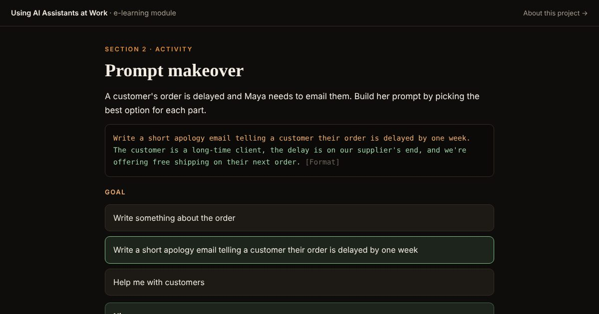

I take complicated systems and turn them into training people actually get. I've done it for a fully remote workforce at Southern California Edison, and I've taught data science and machine learning to adult learners.
Who are the learners, what do they need to do, and what's getting in the way? Then I build whatever actually works: a live virtual class, an e-learning module, a job aid or a full curriculum.
Enterprise systems, software rollouts and new-hire programs. I work with SMEs and engineers and translate what they know for everyone else.
I've taught machine learning and data science, and I use generative AI tools in my own work. I can teach people to use AI without the hype.
I ran the production side of virtual training at enterprise scale. I know how to make live online classes work, for the trainer and the learner.

A 15-minute scenario-based course that teaches non-technical employees to get better results from AI without risking company data. Includes the design document, storyboard and a clickable module.
View the project →When the pandemic hit, SCE's training was built for classrooms. Overnight, trainers and new hires had to work remotely, on a virtual platform most of them had never used. Demand for remote learning grew more than 1,000%.
Having you as our expert producer for the program was a tremendous support and we wouldn't have made it without you.
Coworker, new employee orientation program · SCE
You were truly a hero to a lot of people (myself included) that were struggling with the platform.
Coworker · Southern California Edison
You were a great thought partner and a stellar producer!
Coworker · Southern California Edison
You've truly been a solid contributor to the team during our expanded adoption of virtual learning.
Coworker · Southern California Edison
Designed and launched a complete Shopify storefront for a client, handling everything from store setup to visual branding and product listings. Produced AI-generated marketing video with Grok and Suno to support brand storytelling and product launches. This work keeps me hands-on with the same generative AI tools I now build training around.
Designed and delivered training for a fully remote workforce during the pandemic shift to virtual learning. Led the enterprise-wide rollout of Adobe Connect and wrote the documentation and help guides used across the organization. Partnered with SMEs, engineers and project managers to run needs and gap analyses, then built storyboards, facilitator and participant guides, and blended ILT/WBT courses for large technical rollouts and new-hire programs, including a redesigned SAP curriculum.
Designed and delivered instructor-led higher-education programs in data science, machine learning fundamentals and data visualization for remote learners. Developed hands-on Python and SQL coding challenges so learners could apply AI/ML concepts, not just read about them.
Mentored software engineers on machine learning techniques and applied AI methods. Delivered lectures on statistical machine learning algorithms using Python and Scikit-Learn, along with data mining techniques and data visualization best practices.
I've been making music for about 20 years as a singer, guitarist and producer, and I like working where audio and AI meet. I use AI tools hands-on, and that carries over into how I teach them.
Set up a voice-conversion workflow in Applio, using Google Colab and rented cloud compute for model training. Tested the output by ear: how close it got to the target voice, plus where it broke down (pitch glitches, robotic artifacts).
Built a dataset of audio snippets and trained a convolutional neural network on AWS to classify songs by genre. Code on GitHub.
My music and production work. I write, record and produce my own music, and I produce other bands too. I also perform live at private events, weddings and venues.
B.S. Biological Sciences, Southern Illinois University · Data Science certification, General Assembly · Instructional Design certification · Generative AI, LLM Apps & AI Agents bootcamp (2026)
Looking for remote instructional design work, especially technical or AI training. The best way to reach me is email.